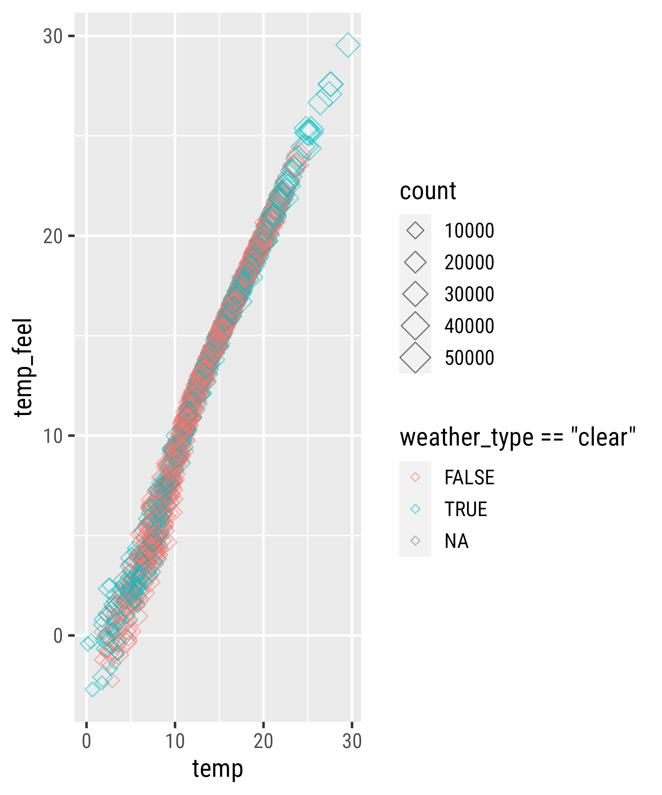
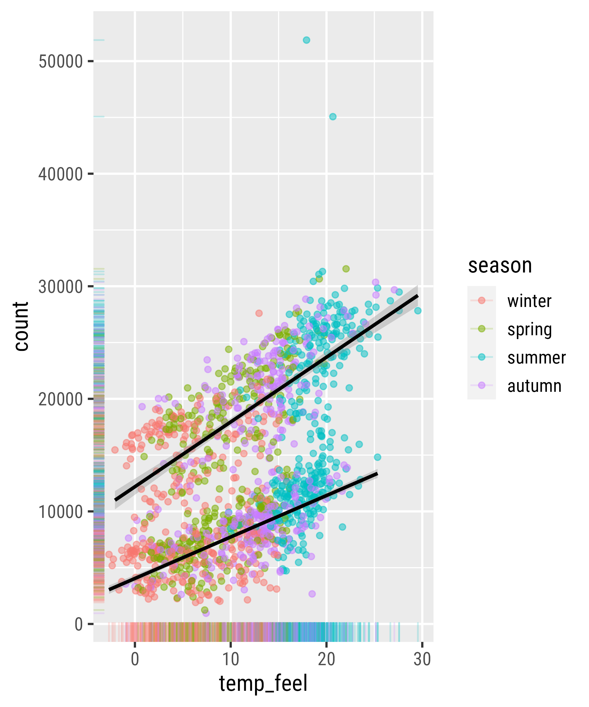
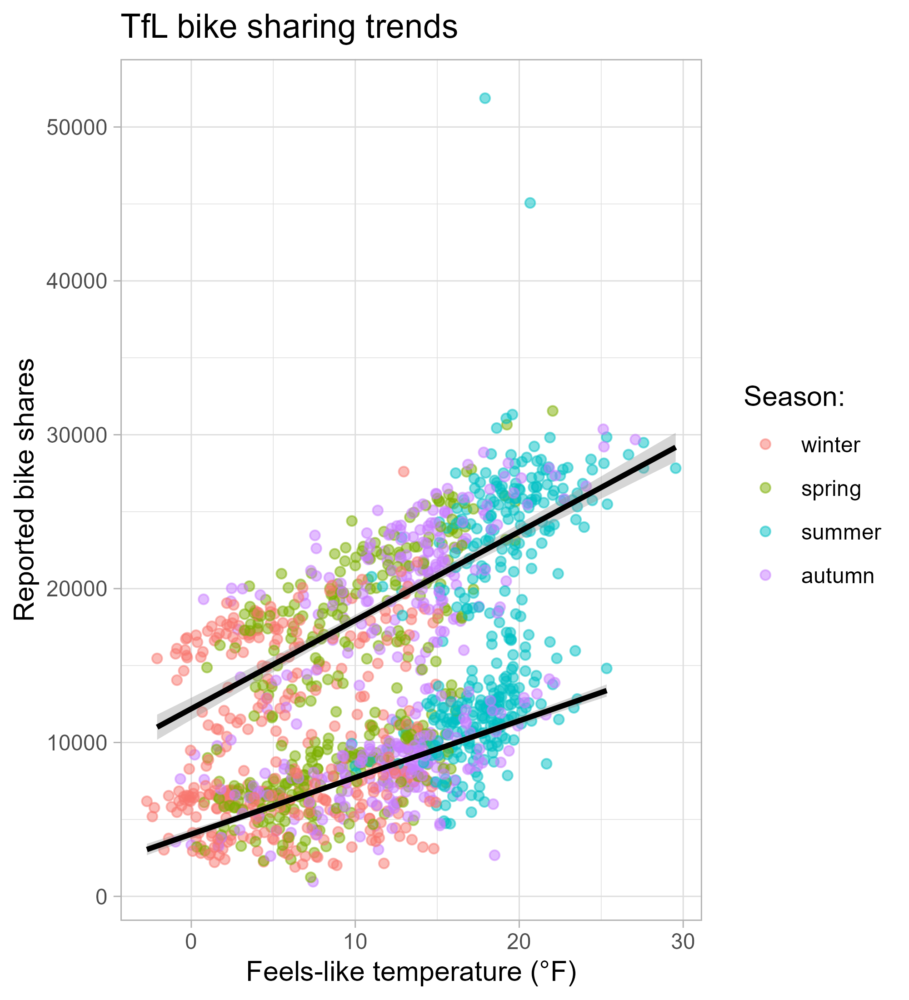
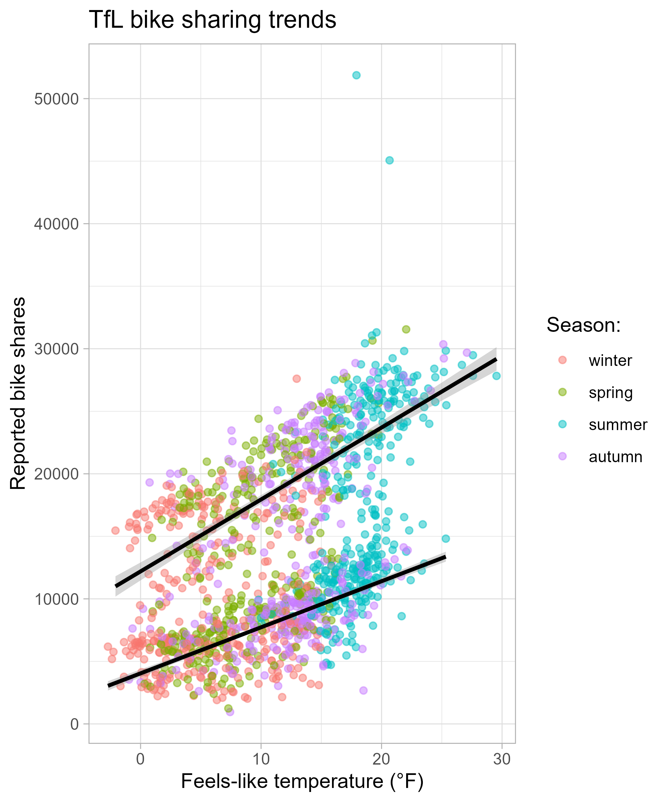
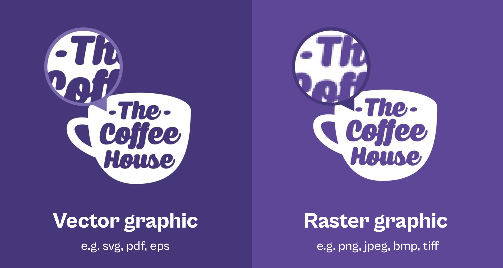

# install.packages("ggplot2")
library(ggplot2)Graphic Design with ggplot2
Concepts of the {ggplot2} Package Pt. 1:
Data, Aesthetics, and Layers + Misc Stuff
Setup
The ggplot2 Package
… is an R package to visualize data created by Hadley Wickham in 2005
… is part of the {tidyverse}
# install.packages("tidyverse")
library(tidyverse)The Grammar of {ggplot2}
The Grammar of {ggplot2}
| Component | Function | Explanation |
|---|---|---|
| Data |
ggplot(data)
|
The raw data that you want to visualise. |
| Aesthetics |
aes()
|
Aesthetic mappings between variables and visual properties. |
| Geometries |
geom_*()
|
The geometric shapes representing the data. |
The Grammar of {ggplot2}
| Component | Function | Explanation |
|---|---|---|
| Data |
ggplot(data)
|
The raw data that you want to visualise. |
| Aesthetics |
aes()
|
Aesthetic mappings between variables and visual properties. |
| Geometries |
geom_*()
|
The geometric shapes representing the data. |
| Statistics |
stat_*()
|
The statistical transformations applied to the data. |
| Scales |
scale_*()
|
Maps between the data and the aesthetic dimensions. |
| Coordinate System |
coord_*()
|
Maps data into the plane of the data rectangle. |
| Facets |
facet_*()
|
The arrangement of the data into a grid of plots. |
| Visual Themes |
theme() and theme_*()
|
The overall visual defaults of a plot. |
A Basic ggplot Example
The Data
Bike sharing counts in London, UK, powered by TfL Open Data
- covers the years 2015 and 2016
- incl. weather data acquired from freemeteo.com
- prepared by Hristo Mavrodiev for Kaggle
- further modification by myself
bikes <- readr::read_csv(
here::here("data", "london-bikes-custom.csv"),
## or: "https://raw.githubusercontent.com/z3tt/graphic-design-ggplot2/main/data/london-bikes-custom.csv"
col_types = "Dcfffilllddddc"
)
bikes$season <- forcats::fct_inorder(bikes$season)| Variable | Description | Class |
|---|---|---|
| date | Date encoded as `YYYY-MM-DD` | date |
| day_night | `day` (6:00am–5:59pm) or `night` (6:00pm–5:59am) | character |
| year | `2015` or `2016` | factor |
| month | `1` (January) to `12` (December) | factor |
| season | `winter`, `spring`, `summer`, or `autumn` | factor |
| count | Sum of reported bikes rented | integer |
| is_workday | `TRUE` being Monday to Friday and no bank holiday | logical |
| is_weekend | `TRUE` being Saturday or Sunday | logical |
| is_holiday | `TRUE` being a bank holiday in the UK | logical |
| temp | Average air temperature (°C) | double |
| temp_feel | Average feels like temperature (°C) | double |
| humidity | Average air humidity (%) | double |
| wind_speed | Average wind speed (km/h) | double |
| weather_type | Most common weather type | character |
ggplot2::ggplot()

Data
ggplot(data = bikes)Aesthetic Mapping
= link variables to graphical properties
- positions (
x,y) - colors (
color,fill) - shapes (
shape,linetype) - size (
size) - transparency (
alpha) - groupings (
group)
Aesthetic Mapping
aesthetics
aes() outside as component
ggplot(data = bikes) +
aes(x = temp_feel, y = count)aes() inside, explicit matching
ggplot(data = bikes, mapping = aes(x = temp_feel, y = count))aes() inside, implicit matching
ggplot(bikes, aes(temp_feel, count))aes() inside, mixed matching
ggplot(bikes, aes(x = temp_feel, y = count))Geometrical Layers
Geometries
= interpret aesthetics as graphical representations
- points
- lines
- polygons
- text labels
- …
Geometries
Visual Properties of Layers
Setting vs Mapping of Visual Properties
Mapping Expressions
Your Turn!
- Create a scatter plot of
temp_feelvstemp.- Map the color of the points to clear weather.
- Map the size of the points to count.
- Turn the points into diamonds.
- Bonus: What do you notice in the legend? How could you fix it?
Mapping Expressions
Mapping to Size
Setting a Constant Property
Setting a Constant Property
Setting a Constant Property
Setting a Constant Property
ggplot(
bikes,
aes(x = temp, y = temp_feel)
) +
geom_point(
aes(color = weather_type == "clear",
size = count),
shape = 23,
alpha = .5
)

Setting a Constant Property
Filter Data
Filter Data

Local vs. Global Encoding

Adding More Layers
Global Color Encoding

Local Color Encoding
The `group` Aesthetic
Set Both as Global Aesthetics
Overwrite Global Aesthetics
Statistical Layers
`stat_*()` and `geom_*()`

`stat_*()` and `geom_*()`

`stat_*()` and `geom_*()`

Statistical Summaries
Statistical Summaries
Statistical Summaries
Statistical Summaries
Extending a ggplot
Store a ggplot as Object
Inspect a ggplot Object
g$data# A tibble: 1,454 x 14
date day_night year month season count is_workday is_weekend
<date> <chr> <fct> <fct> <fct> <int> <lgl> <lgl>
1 2015-01-04 day 2015 1 winter 6830 FALSE TRUE
2 2015-01-04 night 2015 1 winter 2404 FALSE TRUE
3 2015-01-05 day 2015 1 winter 14763 TRUE FALSE
4 2015-01-05 night 2015 1 winter 5609 TRUE FALSE
5 2015-01-06 day 2015 1 winter 14501 TRUE FALSE
6 2015-01-06 night 2015 1 winter 6112 TRUE FALSE
7 2015-01-07 day 2015 1 winter 16358 TRUE FALSE
8 2015-01-07 night 2015 1 winter 4706 TRUE FALSE
9 2015-01-08 day 2015 1 winter 9971 TRUE FALSE
10 2015-01-08 night 2015 1 winter 5630 TRUE FALSE
# ... with 1,444 more rows, and 6 more variables: is_holiday <lgl>, temp <dbl>,
# temp_feel <dbl>, humidity <dbl>, wind_speed <dbl>, weather_type <chr>Inspect a ggplot Object
g$mappingAesthetic mapping:
* `x` -> `temp_feel`
* `y` -> `count`
* `colour` -> `season`
* `group` -> `day_night`Extend a ggplot Object: Add Layers
g +
geom_rug(
alpha = .2
)
Remove a Layer from the Legend
Extend a ggplot Object: Add Labels
Extend a ggplot Object: Add Labels

Extend a ggplot Object: Add Labels
Extend a ggplot Object: Add Labels
Extend a ggplot Object: Add Labels
A Polished ggplot Example
Extend a ggplot Object: Themes
g + theme_light()
g + theme_minimal()Change the Theme Base Settings

Set a Theme Globally
theme_set(theme_light())
g
Change the Theme Base Settings
{systemfonts}
# install.packages("systemfonts")
library(systemfonts)
system_fonts() %>%
filter(str_detect(family, "Cabinet")) %>%
pull(name) %>%
sort() [1] "CabinetGrotesk-Black" "CabinetGrotesk-Black"
[3] "CabinetGrotesk-Bold" "CabinetGrotesk-Bold"
[5] "CabinetGrotesk-Extrabold" "CabinetGrotesk-Extrabold"
[7] "CabinetGrotesk-Extralight" "CabinetGrotesk-Extralight"
[9] "CabinetGrotesk-Light" "CabinetGrotesk-Light"
[11] "CabinetGrotesk-Medium" "CabinetGrotesk-Medium"
[13] "CabinetGrotesk-Regular" "CabinetGrotesk-Regular"
[15] "CabinetGrotesk-Thin" "CabinetGrotesk-Thin" {systemfonts}
{systemfonts} + {ggplot2}
Overwrite Specific Theme Settings
Overwrite Specific Theme Settings
Overwrite Specific Theme Settings
Overwrite Specific Theme Settings
Overwrite Specific Theme Settings

Overwrite Theme Settings Globally
Save the Graphic
ggsave(g, filename = "my_plot.png")ggsave("my_plot.png")ggsave("my_plot.png", width = 8, height = 5, dpi = 600)ggsave("my_plot.pdf", width = 20, height = 12, unit = "cm", device = cairo_pdf)grDevices::cairo_pdf("my_plot.pdf", width = 10, height = 7)
g
dev.off()
How to Work with Aspect Ratios
- don’t rely on the Rstudio viewer pane!
- once you have a “it’s getting close” prototype, settle on a plot size
- Approach 1: save the file to disk and inspect it; go back to your IDE
- tedious and time-consuming…
- tedious and time-consuming…
- Approach 2: use a qmd or rmd with inline output and chunk settings
- set
fig.widthandfig.heightper chunk or globally
- set
- Approach 3: use our {camcorder} package
- saves output from all
ggplot()calls and displays it in the viewer pane
- saves output from all
Setting Plot Sizes in Rmd’s

Setting Plot Sizes via {camcorder}

Recap
{ggplot2}is a powerful library for reproducible graphic design- the components follow a consistent syntax
- each ggplot needs at least data, some aesthetics, and a layer
- we set constant propeties outside
aes() - … and map data-related properties inside
aes() - local settings and mappings override global properties
- grouping allows applying layers for subsets
- we can store a ggplot object and extend it afterwards
- we can change the appearance for all plots with
theme_set()
andtheme_update()
Exercises
Exercise 1
- Open the script
exercises/02_concepts_pt1_ex1.qmd. - Explore the TfL bike share data visually:
create a timeseries of reported bike shares on weekend days- Highlight day and night encoded by colors and shapes.
- Connect the points of each period with lines.
- What is the difference between
geom_line()andgeom_path()?
- What is the difference between
- Apply your favorite theme to the plot.
- Add meaningful labels.
- Save the plot as a vector graphic with a decent plot size.
Exercise 2
- Open the script
exercises/02_concepts_pt1_ex2.qmd. - Explore the TfL bike sharing data visually:
create a boxplot of counts per weather type- Turn the plot into a jitter strips plot (random noise across the x axis)
- Combine both chart types (jittered points on top of the boxplots)
- Bonus: Sort the boxplot-jitter hybrid by median counts
- Apply your favorite theme to the plot.
- Add meaningful labels.
- Bonus: Explore other chart types to visualize the distributions.
- Save the plot as a vector graphic with a decent plot size.